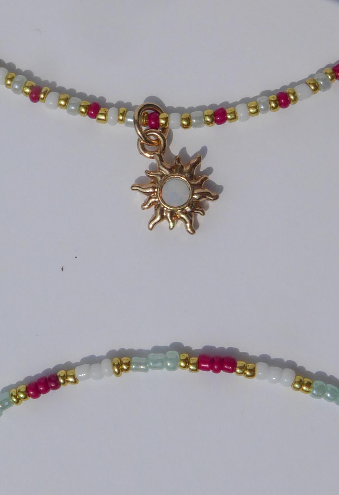

I am finishing my last semester of college this fall. I will be graduating with a bachelor's degree in Computer and Information systems.This website is just a little thing that i made so that you guys can get to know me a little bit more. A few things that i love doing include crafts, playing on my switch, very recently i got into learning more about html and css (which is why i started doing this). I want to share the things that i have made and things that i will make in the future.



I decided to do this because I really liked the idea of making websites when I was in class. It was one of my favorite classes that i took. building websites gave me creative freedon and really allowed me to make the website exactly the way I want it to look.